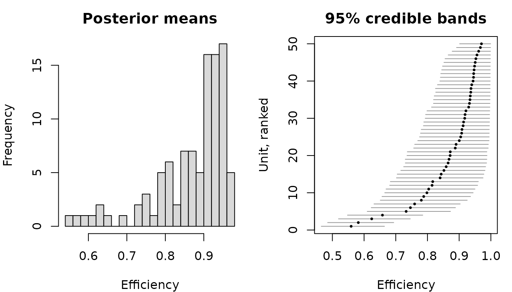
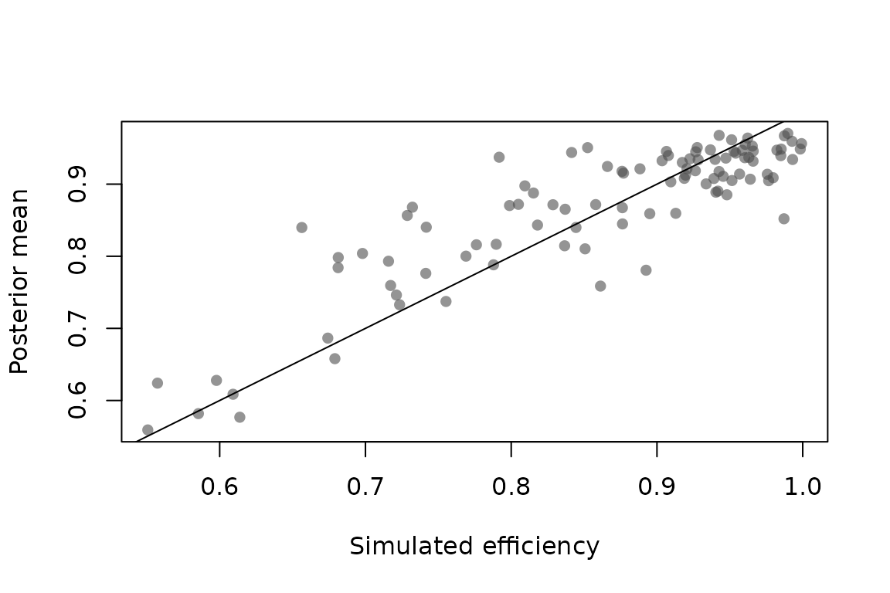

vignettes/koop-exercise.Rmd
koop-exercise.RmdExercise 14.13 of Koop, Poirier and Tobias (2007), which follows
Chapter 7 of Koop (2003), estimates a panel stochastic frontier model by
Gibbs sampling with data augmentation. The MATLAB programs distributed
with the book, ch14q13dgp.m and ch14q13.m,
generate an artificial panel and then sample from the posterior. Because
the data-generating process is known, the exercise is a useful external
check on this package: the sampler here should reproduce it.
This vignette translates both programs into bsfa and
compares the results.
ch14q13dgp.m builds a balanced panel of
individuals observed over
periods, with an intercept and two regressors drawn from a uniform
distribution:
with and , so the error precision is . The inefficiency term is drawn once per individual and held fixed over that individual’s five periods — the time-invariant specification of Pitt and Lee (1981).
In the MATLAB the draw is
gamm_rnd(1, 1, .5*vz, .5*vz*muterm) with
vz = 2 and muterm = 1/muz, which is a gamma
with shape vz/2 = 1 and rate 1/muz: an
exponential with mean
.
The individuals are therefore about 85 per cent efficient on average by
construction.
set.seed(14013)
n <- 100
t <- 5
theta <- c(1, 0.75, 0.25)
sigma <- 0.2
mu_z <- -log(0.85)
x <- cbind(x1 = runif(n * t), x2 = runif(n * t))
z <- rexp(n, rate = 1 / mu_z)
id <- rep(seq_len(n), each = t)
y <- as.numeric(cbind(1, x) %*% theta) - z[id] + rnorm(n * t, sd = sigma)
stoch_front <- data.frame(y = y, x, id = id)
head(stoch_front, 3)
#> y x1 x2 id
#> 1 1.198657 0.14478344 0.2859622 1
#> 2 1.176479 0.04942042 0.9624102 1
#> 3 1.004895 0.02933582 0.5446138 1ch14q13.m sets an independent normal–gamma prior plus a
hierarchical prior on the inefficiencies. Each of its three blocks maps
onto one argument of add_priors().
The coefficients get a normal prior centred at
,
with a variance of 100 on the intercept and
on the slopes. add_priors() takes the prior
precision, so the variances are inverted:
Note that this prior is deliberately at odds with the truth: it puts both slopes at 0.5 with a standard deviation of 0.25, while the data were generated with 0.75 and 0.25.
The error precision gets v0 = 0 degrees of freedom,
which is the improper limiting prior
.
In the shape and rate parameterisation used here that is a pair of
zeros:
sigma_prior <- list(shape = 0, rate = 0)The inefficiency prior uses v_z = 2 and
mu_z = -log(.5), that is, a prior median efficiency of one
half. This is the elicitation of van den Broeck, Koop, Osiewalski and
Steel (1994), and add_priors() takes the anchor
directly:
lambda_prior <- list(r_star = 0.5, shape = 1)So the prior expects far more inefficiency than the data contain, which makes the exercise a reasonable test of whether the likelihood dominates.
ch14q13.m discards 25 draws and keeps 250. Those numbers
are much too small for real work, and the book says so, but they are
what the reference program uses:
model <- create_sfmodel_exp(y ~ x1 + x2, data = stoch_front, id = "id",
iterations = 250, burnin = 25)
model <- add_priors(model,
coef = coef_prior,
sigma = sigma_prior,
lambda = lambda_prior)
model <- add_initial_values(model)
model <- add_seed(model, 14013)
model <- add_posterior_coefficients(model)
summary(model)
#> Bayesian stochastic frontier model
#>
#> Call:
#> create_sfmodel_exp(formula = y ~ x1 + x2, data = stoch_front,
#> id = "id", iterations = 250, burnin = 25)
#>
#> Frontier: production
#> Inefficiency: exponential
#> Observations: 500
#> Units: 100
#> Draws: 250 after 25 burn-in, thinning 1
#>
#> Posterior summary, 95% credible bands:
#> mean sd 2.5% median 97.5%
#> (Intercept) 0.9916 0.0283 0.9363 0.9897 1.0465
#> x1 0.7233 0.0334 0.6612 0.7231 0.7847
#> x2 0.2696 0.0313 0.2079 0.2704 0.3323
#> sigma_v 0.1976 0.0064 0.1858 0.1974 0.2096
#> lambda 6.4162 0.8353 4.9951 6.3800 8.3297
#>
#> Posterior mean efficiency, per unit:
#> mean min median max
#> 0.8669 0.5581 0.9032 0.9747Supplying id is what makes this the Pitt and Lee
specification: one inefficiency term per individual, held fixed over
that individual’s periods, exactly as zdraw is in the
MATLAB loop.
The posterior means sit close to despite the prior pulling both slopes towards 0.5. The error standard deviation is recovered near 0.2, which is the precision of 25 the program prints.
Two hundred and fifty draws is not enough to pin down the tails. With a longer chain the picture firms up:
long <- create_sfmodel_exp(y ~ x1 + x2, data = stoch_front, id = "id",
iterations = 20000, burnin = 2000)
long <- add_priors(long,
coef = coef_prior,
sigma = sigma_prior,
lambda = lambda_prior)
long <- add_seed(add_initial_values(long), 14013)
long <- add_posterior_coefficients(long)
round(summary(long)$coefficients, 4)
#> mean sd 2.5% median 97.5%
#> (Intercept) 0.9892 0.0290 0.9328 0.9892 1.0465
#> x1 0.7231 0.0329 0.6589 0.7228 0.7882
#> x2 0.2683 0.0314 0.2063 0.2685 0.3302
#> sigma_v 0.1976 0.0069 0.1846 0.1974 0.2116
#> lambda 6.4828 0.8924 4.9064 6.4275 8.4132Comparing the two against the values used to simulate the data:
truth <- c(theta, sigma, 1 / mu_z)
cbind(truth = truth,
short = summary(model)$coefficients[, "mean"],
long = summary(long)$coefficients[, "mean"])
#> truth short long
#> (Intercept) 1.000000 0.9916386 0.9892425
#> x1 0.750000 0.7232788 0.7231489
#> x2 0.250000 0.2695517 0.2683340
#> sigma_v 0.200000 0.1976278 0.1975844
#> lambda 6.153129 6.4162489 6.4827670The last row is the rate of the exponential, whose true value is . It is the least well determined of the parameters: with individuals there are only a hundred observations on the inefficiency distribution, however long the panel.
The program closes with a histogram of the posterior means of the efficiencies, which is Figure 7.5 in Koop (2003).
plot(long, type = "efficiency")
The left panel is that figure. The right one is what the book’s program does not show, and is the more interesting of the two.
Because bsfa keeps the augmented draws rather than only
their means, the same object also answers how well any individual score
is determined:
eff <- efficiency(long)
head(eff)
#> unit mean sd 5% 50% 95%
#> 1 1 0.9048115 0.05986282 0.7961333 0.9110199 0.9891611
#> 2 2 0.7842108 0.07067832 0.6736594 0.7806643 0.9082414
#> 3 3 0.8398531 0.07072492 0.7231910 0.8402343 0.9589344
#> 4 4 0.7594803 0.06934052 0.6495979 0.7566128 0.8795258
#> 5 5 0.7982657 0.07101425 0.6864374 0.7956790 0.9216059
#> 6 6 0.8448553 0.07013706 0.7287951 0.8443302 0.9625896Each interval is wide even with five observations per individual. That is not a shortcoming of the sampler but the shape of the problem: a single has to be told apart from five normal errors, so the data leave a good deal of uncertainty about it. Maximum likelihood faces the same difficulty, and reports the Jondrow et al. (1982) conditional mean without an interval to say so.
plot(exp(-z), eff$mean,
xlab = "Simulated efficiency", ylab = "Posterior mean",
pch = 16, col = grey(0.3, 0.6))
abline(0, 1)
The full conditional for
in ch14q13.m is a normal truncated at zero, with
zvar = 1 / (t * h)
zterm = 1 / (t * h * muz)
zmean = mean(x_i) * beta - mean(y_i) - ztermThe same conditional is used here. Writing
,
the precision is
and the mean is
divided by that precision, which is the expression above once
and
are substituted. The zterm is the contribution of the
exponential prior.
The half-normal model of create_sfmodel_hn() differs in
exactly that place: there is no shift in the mean, and instead the
precision gains a term
.
That one line is the whole difference between the two specifications
inside the sampler, and the reason the package splits them by class is
the prior rather than the loop.
Jondrow, J., Lovell, C. A. K., Materov, I. S., & Schmidt, P. (1982). On the estimation of technical inefficiency in the stochastic frontier production function model. Journal of Econometrics, 19(2–3), 233–238.
Koop, G. (2003). Bayesian Econometrics. Chichester: Wiley.
Koop, G., Poirier, D. J., & Tobias, J. L. (2007). Bayesian Econometric Methods. Cambridge: Cambridge University Press.
Pitt, M. M., & Lee, L.-F. (1981). The measurement and sources of technical inefficiency in the Indonesian weaving industry. Journal of Development Economics, 9(1), 43–64.
van den Broeck, J., Koop, G., Osiewalski, J., & Steel, M. F. J. (1994). Stochastic frontier models: A Bayesian perspective. Journal of Econometrics, 61(2), 273–303.